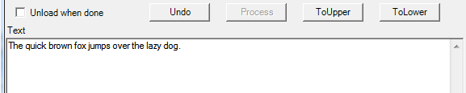
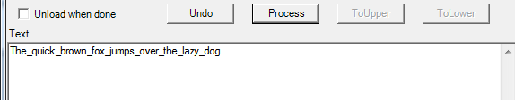
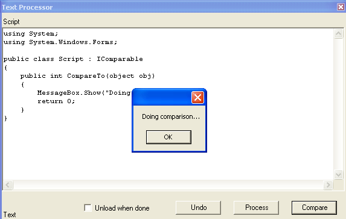

This tutorial will demonstrate how create the simple "text editor" application (Text Processor), which uses user entered C# code for text manipulations. The "type sharing" pattern in this tutorial is implemented with passing well-known type between the script host and the actual script. This tutorial also contains implementation of Local and Remote dynamic assembly loading.
Only the code, which logically belongs to the script hosting implementation will be discussed here. To accomplish this tutorial you will need to download TextProcessor1.zip file. Then extract the content of the zip file in the convenient location.
The host application for this tutorial comes in two flavors: C# script (textprocessor.cs) and Visual Studio 2003 (VS7.1) project (content of extracted textprocessor folder). All code snippets in this tutorial are taken from textprocessor.cs script, however they are applicable to the VS7.1 project to the same degree.
This tutorial demonstrates how to:
Firstly let's see the Text Processor in
action:
The script will create and show the following dialog.
The top panel (script panel) contains a C# code (script) template for implementation of the text manipulation routine. The default C# script inserts a TAB character at the start of the text in the bottom panel (text panel).
If you press "Process" button it will modify the text this way:

Now change the script code to do replacing all space characters with underscore as following:
using System;
public class Script
{
static public string Process(string text)
{
return text.Replace(" ", "_");
}
}
If you now press "Undo" and then "Process" buttons it will modify text this way:

Calling static methods
The method ExecuteProcessLocaly() in textprocessor.cs contains actual implementation of loading and executing the script. Calling CSScript.LoadCode is the most important part of the method.
void ExecuteProcessLocaly()
{
try
{
Assembly scriptAsm = CSScript.LoadCode(textBoxScript.Text, null, true);
AsmHelper helper = new AsmHelper(scriptAsm);
textBoxText.Text=
(string)helper.Invoke("Script.Process", textBoxText.Text);
}
catch (Exception ex)
{
MessageBox.Show(ex.ToString());
}
}
LoadCode takes the string of C# script code, compiles it into assembly, loads
the assembly to the current AppDomain
and returns the loaded assembly. Now we can instantiate any public type or call
any public static method implemented in this assembly. You can use either
Reflection or AsmHelper class
from the CSScriptLibrary for this
purpose. This class is just a simple utility class, which simplifies assembly
browsing.
Code in the script panel defines type Script
and its static method Process(string).
Thus, you may invoke this method by calling method
Invoke of the corresponding AsmHelper instance. In our example we
pass content of the text panel for conversion and assign it back when
conversion is complete.
textBoxText.Text = (string)helper.Invoke("Script.Process", textBoxText.Text);
Creating objects
Now let's instantiate a type implemented in a script. The only type in our script is the class Script. It can be instantiated either with Assembly.CreateInstance() or AsmHelper.CreateObject() methods. Both methods return an instance of Object type, which has to be type casted to the actual type you want to use. The only problem with this is that the type Script is not known by the host application. In fact it cannot be known because the code for class Script did not exist at the time the host application was written/compiled. This restriction is not applicable for well-known types (e.g. String). That is why we can inherit our Script class from some interface of GAC in order to make it possible for the host application to understand it. The advantages of using well-known types are discussed in the "Passing well-known type..." section.
Let's implement in our script some class that can be used for sorting operations (the type must implement IComparable interface).
using System;
using System.Windows.Forms;
public class Script : IComparable
{
public int CompareTo(object obj)
{
MessageBox.Show("Doing comparison...");
return 0;
}
}
The implementation simulates actual comparison by showing the MessageBox.

This is how Script type is instantiated in the event handler for the "Compare"
button.
Assembly scriptAsm = CSScript.LoadCode(textBoxScript.Text, null , true);
AsmHelper helper = new AsmHelper(scriptAsm);
IComparable comparer = (IComparable)helper.CreateObject("Script" );
comparer.CompareTo(textBoxText.Text);
Of course the same can be done by using pure Reflection but in this case readability of the code would suffer dramatically.
Loading/Unloading the script assembly
Another interesting point to discuss is the way how the compiled script is loaded. In the ExecuteProcessLocaly() method discussed above the script was compiled and loaded into current AppDomain. The code snippet below is the implementation of the ExecuteProcessRemotely(). This method is called when button the "Process" is pressed and the "Unload when done" check box is checked.
void ExecuteProcessRemotely()
{
try
{
string asmFile = CSScript.CompileCode(textBoxScript.Text, null , true);
using (AsmHelper helper = new AsmHelper(asmFile, "", true))
{
textBoxText.Text =
(string) helper.Invoke("Script.Process" , textBoxText.Text);
}
}
catch(Exception ex)
{
MessageBox.Show(ex.ToString());
}
}
In this code AsmHelper loads the compiled script assembly (asmFile)
to a new temporary AppDomain (remote loading). After execution of
the "Script.Process" method the instance of AsmHelper disposed. When
AsmHelper is being
disposed it also unloads the whole temporary AppDomain with all its
assemblies.
How AsmHelper will load assembly depends on which constructor was used to instantiate this type (see CSScriptLibrary reference):
public AsmHelper(Assembly asm) - loading to the current AppDomain.
public AsmHelper(string asmFile, string domainName, bool deletOnExit) - loading to the temporary AppDomain
This is done in order to overcome the limitation of the CLR with respect to loaded assemblies:
Once
the assembly loaded it cannot be unloaded any more.
Use the remote loading carefully as it introduces important constraint on the types implemented in your script:
The type, which is to cross AppDomain boundaries must be either serializable or inherited from MarshalByRefObject.
Thus, if you repeat the test for creating IComparable
object with the "Unload when done" check box checked, you will have an
exception because class Script is neither serializable nor
MarshalByRefObject.
In this tutorial almost all possible execution scenarios were implemented just
to demonstrate all available implementation options. However it is unlikely you
would need to implement all of them in real development. The next tutorial (Image
Processor) is an example of more practical/simple approach where the
host application is implemented according "Script
hosting guideline".
CS-Script tutorials | "Type sharing" pattern | Dynamic assembly loading